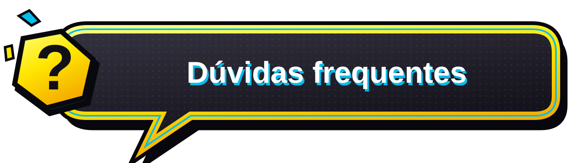

<!doctype html><html lang="pt-BR"><meta charset="utf-8"><meta name="viewport" content="width=device-width,initial-scale=1"><title>Prévia dos itens solicitados — fundo e placa FAQ</title><link rel="stylesheet" href="../06-tipografia/fontes.css"><link rel="stylesheet" href="efeito/fundo-faq.css"><style>
*{box-sizing:border-box}body{margin:0;background:#101018;color:#fff;font:14px Montserrat,Arial,sans-serif}.toolbar{padding:18px 24px;border-bottom:1px solid #383845;display:flex;flex-wrap:wrap;gap:12px;align-items:center}.toolbar strong{margin-right:auto;font-size:13px}.toolbar button,.toolbar a{font:800 12px Montserrat,Arial,sans-serif;border:2px solid #111018;border-radius:7px;background:#ffe600;color:#111018;padding:10px 16px;text-decoration:none;cursor:pointer}.toolbar button:focus-visible,.toolbar a:focus-visible{outline:3px solid #05bded;outline-offset:4px}.toolbar button:disabled{opacity:.5;cursor:default}.toolbar button.secondary{background:#05bded}.scene{min-height:640px;display:grid;place-items:center}.rg-faq-content{width:min(94%,1000px);text-align:center;padding:75px 0 100px}.rg-faq-sign{width:min(100%,920px)}.caption{margin:2px 0 32px;font-size:10px;letter-spacing:3px;color:#c1c3ce;text-transform:uppercase}footer{padding:18px 24px;color:#c0bdcd;line-height:1.6;border-top:1px solid #383845}#status{font-size:12px;margin:0 0 10px;color:#ffe600}.notes{font-size:11px;margin:0}.links{margin-top:12px;display:flex;gap:22px;flex-wrap:wrap}.links a{color:#05bded}@media(max-width:700px){.toolbar{padding:14px;gap:7px}.toolbar strong{width:100%}.toolbar button{padding:10px;font-size:11px}.scene{min-height:650px}.rg-faq-content{padding:110px 20px 90px}.caption{letter-spacing:1px}.rg-faq-sign{width:min(100%,420px)}}
</style><header class="toolbar"><strong>ROCKET’S GAMES · FUNDO E PLACA</strong><button id="play">Reproduzir movimentos</button><button id="pause" class="secondary">Pausar</button><button id="speed" class="secondary" aria-pressed="false">Ver em 2×</button></header><main id="scene" class="scene rg-faq-scene"><div class="rg-faq-content"><picture class="rg-faq-sign"><source media="(max-width:700px)" srcset="placa/placa-mobile-com-texto.svg"></picture><p class="caption">Placa nova · balão de quadrinhos</p></div></main><footer><p id="status" role="status" aria-live="polite"></p><p class="notes">Cristais avançam no sentido das pontas; a retícula se move em ondas. A prévia recria os elementos em camadas vetoriais — não é uma alteração da sua landing. Se o sistema pedir movimento reduzido, clique em Reproduzir movimentos para visualizar.</p><div class="links"><a href="placa/placa-desktop-com-texto.svg">Abrir placa</a><a href="placa/placa-desktop-sem-texto.svg">Placa sem texto</a><a href="guia/COMO-INTEGRAR.txt">Como integrar</a></div></footer><script src="efeito/fundo-faq.js"></script><script>
const bg=RocketFaqBackground.mount(document.getElementById('scene'));
const status=document.getElementById('status');
function update(){const s=bg.getState();status.textContent=s.enabled?'Movimentos ativos · velocidade '+s.speed+'× · movimentos aprovados.':'Movimentos pausados. Clique em Reproduzir movimentos para avaliar a animação.';document.getElementById('pause').disabled=!s.enabled;document.getElementById('play').disabled=s.enabled;}
document.getElementById('play').onclick=()=>{bg.play({force:true});update();};
document.getElementById('pause').onclick=()=>{bg.pause();update();};
document.getElementById('speed').onclick=()=>{const fast=bg.getState().speed===1;bg.setSpeed(fast?2:1);document.getElementById('speed').textContent=fast?'Voltar a 1×':'Ver em 2×';document.getElementById('speed').setAttribute('aria-pressed',String(fast));update();};update();
</script></html>
